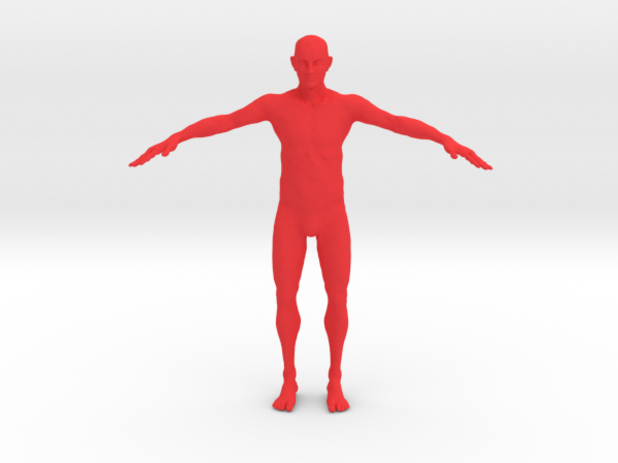
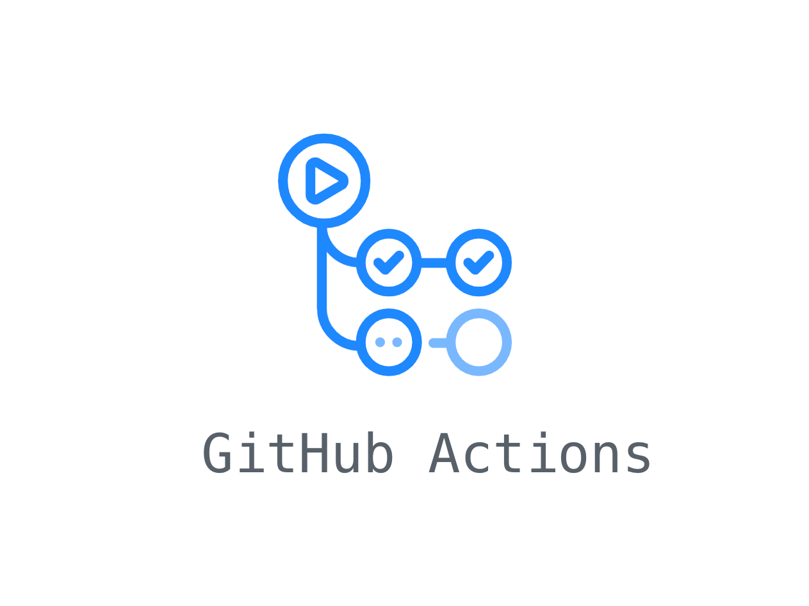

Nick Hodgskin
aka.

A showcase of a few side projects I have worked on. Some projects are associated with GitHub repos and explanatory videos, which are linked where applicable.
Once upon a time, I stumbled accross a subreddit called
r/happycowgifs, and I thought it would amazing to collate the top 1000
posts into one, long "watchable" video for everyones viewing pleasure.
A beautiful mixture of PRAW (a Reddit API wrapper to gather data),
Requests, Pandas, and MoviePy allowed me to brew up a 4.5 hour long
compilation. The video is complete with metadata for each GIF, and
even a progress bar.
 GitHub
GitHub
The goal of this project was to not only to make a program to solve sudokus, but also to give consideration to the style of the code. By coding flexibly, and in a readable manner would allow the code to be expanded upon if I or someone else came along at a later date and wanted to expand on the content. An object oriented approach was used, allowing for separation between algorithm logic and the view. This would allow alternate views to be linked up with minimal refactoring. This was also compared to using a function based approach. I used a backtracking algorithm in order to solve the sudokus. In the near future, I plan to implement a view using Kivy. I am also considering allowing the solver to also solve sudoku variants.
GitHub
As part of my Agile Web Development unit at university, we embarked on a journey to create a website where people could learn morse code. The result that Dean Law, Jonathan Choong, and myself came up with was Learn Morse. A website with flashcards, minigames, and user statistics that guides the user through learning morse code. Although the site isn't hosted, the source code is available in the linked repo, and a tour is available in the video to the right.
GitHub
Wanting to experiment with webscraping, as well as manipulating word
documents with Python, I embarked on the task of collating all the
speeches and interviews done by Trump into one, readable PDF document.
The result of which was a 5636 page PDF document complete with a cover
page and contents page.
Likewise, I similarly collated a PDF with speeches from Obama, which
came in at 2593 pages.
So, what’s next on the chopping block? Here is a lineup of the projects I am planning to complete over the coming months.
In order to get acquainted with computer vision, I am planning to use OpenCV in Python, along with a pretrained posture recognition neural network in order to extract posture information from video. This information will then be imported into Blender, creating an animated character.

GitHub
I would like to expand and improve this website that you are reading. At the moment it is plain HTML and CSS, however I plan to incorperate Next.js and GitHub actions in order to have the HTML pages render on update. This will allow me to specify site content in separate files, allowing for maintainability.
